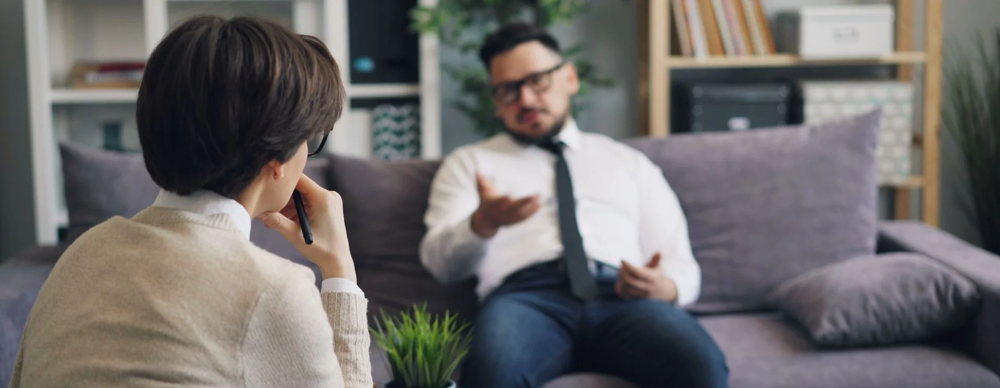
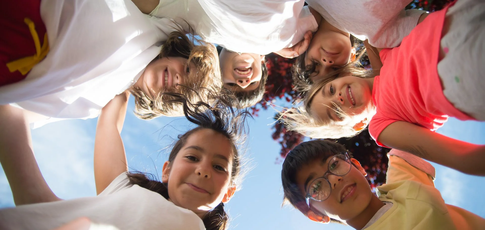
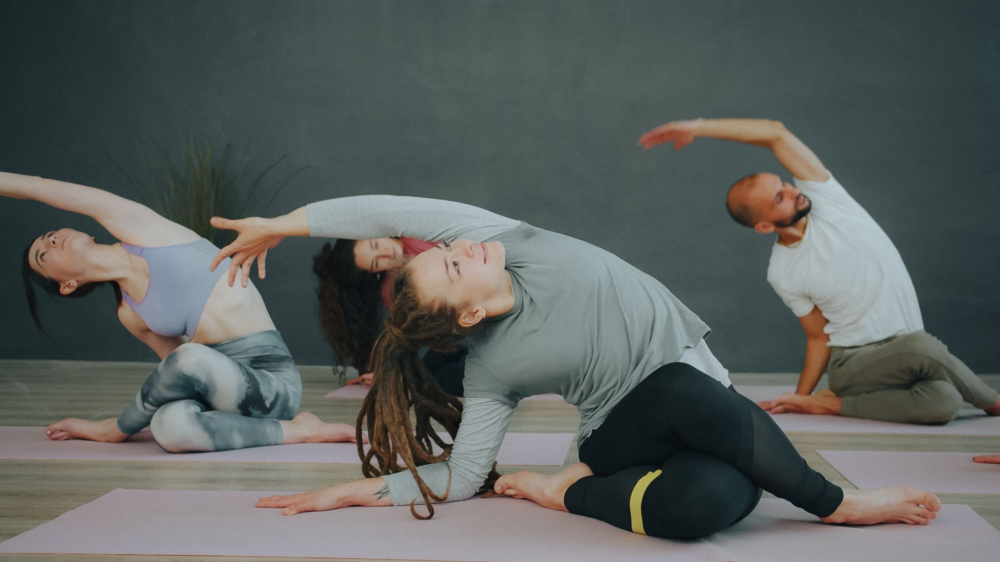
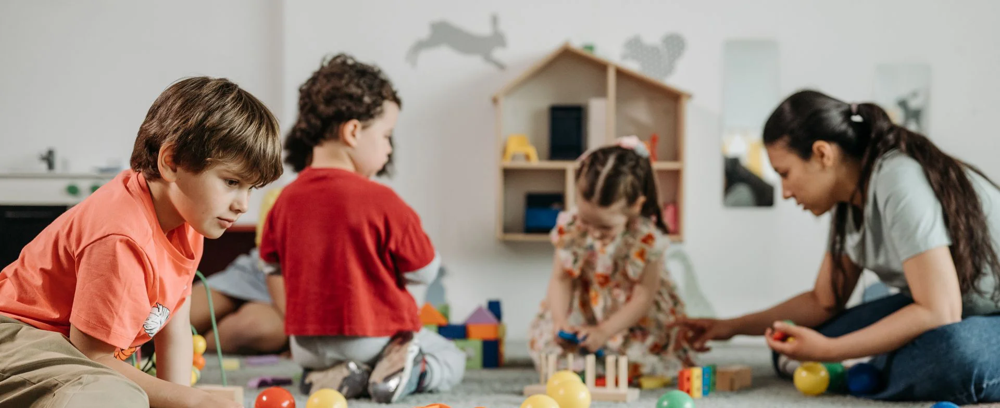
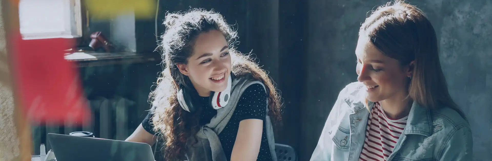
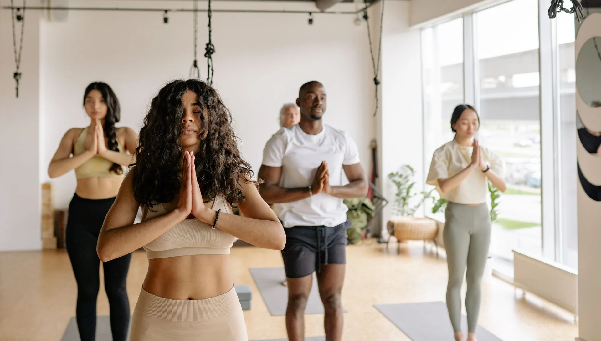

Psicologia
Colloqui individuali, di coppia e familiari per elaborare emozioni, superare momenti di crisi e prendersi cura della propria salute mentale.
ApprofondisciUn luogo accogliente dove ritrovare ascolto, equilibrio e fiducia, a ogni età.
Al Centro Alba psicologi, educatori e operatori del benessere lavorano fianco a fianco. Accompagniamo bambini, ragazzi e adulti con percorsi costruiti sulla singola persona, per affrontare i momenti difficili e coltivare serenità nella vita quotidiana.
Guardiamo a ciascuno nella sua interezza, tenendo conto delle relazioni e del contesto familiare in cui vive.

Competenze diverse che lavorano insieme, per offrire a ciascuno il sostegno più adatto.

Colloqui individuali, di coppia e familiari per elaborare emozioni, superare momenti di crisi e prendersi cura della propria salute mentale.
Approfondisci
Laboratori e percorsi educativi che sostengono l'apprendimento, la creatività e le competenze relazionali di bambini e ragazzi.
Approfondisci
Yoga, mindfulness e tecniche di rilassamento per ritrovare energia, ridurre lo stress e ascoltare meglio corpo e mente.
ApprofondisciDall'infanzia all'età adulta, ogni fase porta con sé domande e sfide diverse. Per questo il centro offre percorsi dedicati, che possono intrecciarsi tra loro quando serve uno sguardo più ampio.

Gioco, ascolto e attività educative per sostenere lo sviluppo emotivo e relazionale dei più piccoli, con il coinvolgimento costante dei genitori.

Uno spazio riservato in cui ragazze e ragazzi possono parlare liberamente di scuola, relazioni, identità e futuro.

Supporto psicologico, sostegno alla genitorialità e attività per il benessere psicofisico, con tempi e modalità su misura.
“Ogni cambiamento inizia con un primo passo, fatto al proprio ritmo.”
Crediamo che il benessere nasca dal rispetto dei tempi di ciascuno. Rallentare, osservarsi e chiedere aiuto quando serve non sono segni di debolezza, ma il modo più autentico per ritrovare le proprie risorse.
Psicologi, pedagogisti e operatori del benessere condividono lo stesso metodo: mettere la persona al centro e coordinarsi in équipe per offrire il percorso più adatto.
Lavori nell'ambito della salute, dell'educazione o del benessere? Ci farebbe piacere conoscerti.
Collabora con noi
Scrivici o chiamaci: fissiamo insieme un primo colloquio conoscitivo.